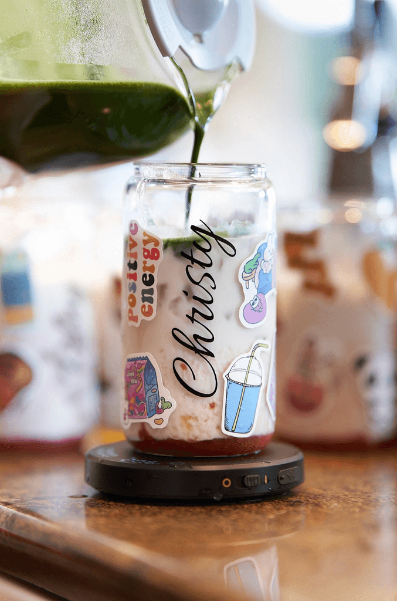
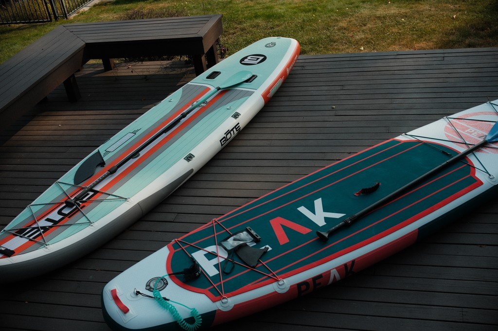

About
View resumeHey there!
I transform complex problems into clear, intuitive designs that people love to use. From research to systems to prototypes, my work focuses on impact, not just pretty screens.
When I’m not designing, you’ll probably catch me making my matcha or taking photos on my Fujifilm. I believe great design should feel effortless — solving real problems, fast, without the fluff.
Here's a quick peek into my world.


Experience
-
Microsoft
Product Designer II
May 2021 – Present · Seattle, WA (remote)
-
Ben Kinney Companies
Web & UX Designer
Aug 2018 – Aug 2019 · Bellingham, WA
Education
-
Master of Fine Arts
Visual Communication Design
Rochester Institute of Technology · Rochester, NY
-
Bachelor of Science
Psychology, Minor in UX Design
Western Washington University · Bellingham, WA